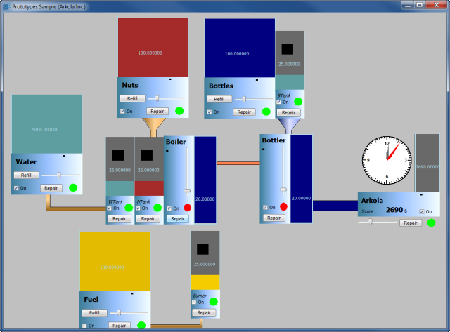

Simple SynopticShows how to create a synoptic builder.
Shows how to create Business Graphics Object for a Factory synoptics builder. Here, the application data structure is built from the prototype instances loaded in the panel. This enable using studio as an application builder: simply add prototype instances of 'Machine', 'Container', 'Producer', 'Mixer' or 'Factory' to a panel, and connect them together. The user interface mediator will create corresponding objects in the application, enabling simulation of the whole factory. Here again, the prototypes provided are just basic shapes that can be customized at will to better represent each application object.
IlvGroupHolderIlvGroupIlvGroupMediatorIlvProtoInstanceIlvPrototype